Multiapp.exe Help Section
Multiapp is a powerful tool designed for managing activities in an IT or IT support department. This guide explains each functionality of the application and how public accounts, saved in the Accounts.txt file, can be used.
Login
- Public accounts: Saved in 'Accounts.txt'.
- The following accounts also exist, but they are used for developer mode and end users do not have access to them.

Features
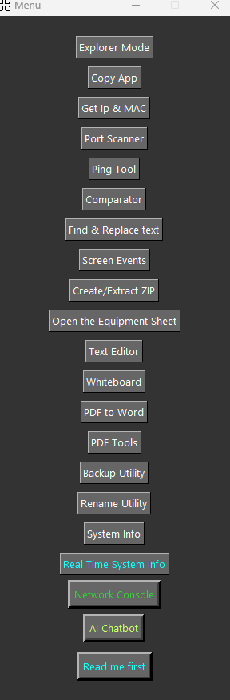
1. Explorer Mode
It allows for the dynamic copying of folders/files locally, but not from a server or network location. Essentially, the user will save the local paths in the corresponding text files, and if they need the process to be automatic, the parser will know to search each path line by line, saving the user time for future uses. It's like navigating manually in File Explorer, but the paths chosen by the user will be saved for easier copying.
2. Copy App
Copy App: This is an application that manages paths already registered by the IT department for copying files from a network location (on a server). This process is useful for configuring a new computer. The first step after introducing the new PC into the domain is to copy the necessary programs to ensure proper operation and meet the requirements specified in the IT department's equipment sheet. The destination folder will be C:\KIT. There is a menu of buttons on the right that correlates with the equipment sheet: for example, if you are copying certain programs for a directory, the checkboxes for the programs to be copied will be automatically selected. There is also a button that opens a mini network console, useful for checking whether files are being copied from a network location or not. To configure this copy application from scratch, you need to edit the paths.txt and profiles.json files. Typically, when the application does not interact much with the internet, you will see 0.00 as values (we decided to have exactly 2 decimal places).
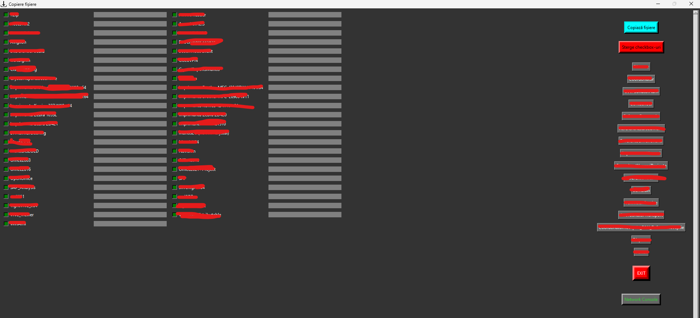
Compared to traditional copying, these two methods of copying are performed more efficiently (18.8% ~ 20%), as the locations are already precompiled and the bits are directly allocated to the destination file.
3. Get IP & Mac
Display the IP and MAC address of your PC. Additionally, display the MAC address of a device connected to the VLAN or LAN.

4. Port Scanner
Display all open ports of any device on the network.

5. Ping Tool
Execute a Ping command to certain devices and can display which ports are open.

6. Find & Replace
Search for a string of characters in your text and replace it with another string of characters.

7. Screen Events
Screen recording & screen shoot.
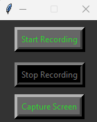
8. Create/Extract Zip
Create/extract an archive and can also extract just a selection from an archive. It works only with zip files.

9. Open the Equipment Sheet
It is assumed that the equipment sheet is an Excel file. This tool will help you open the sheet without needing Office installed on the new PC.

10. Comparator
Compare 2 files or 2 folders to identify the differences.
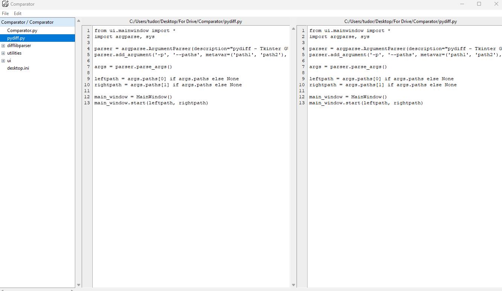
11. Text Editor
It is a copy of the Notepad program, useful for quickly jotting down notes.
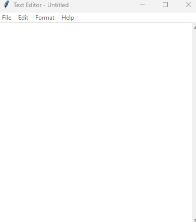
12. Whiteboard
A mini Paint for diagrams/drawing.

13. PDF to Word
Convert a PDF file to Word and also save the images from that Word file separately.
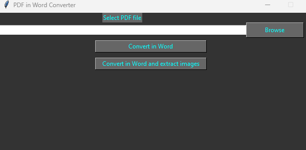
14. PDF Tools
Provides various tools for manipulating a PDF file: encryption/password protection, image extraction, page rotation, splitting pages into multiple PDF files, and deleting pages from a PDF file.

15. Backup Utility
Provides the functionality to create a backup for sensitive data or certain data that is about to be modified and is quite important. The user decides when it is useful to use this utility.
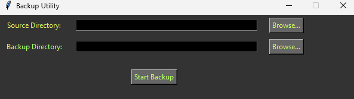
16. Rename Utility
Rename specific files in a selected folder.

17. System Info
Displays various system information and allows you to perform several tasks: open the power plan, join the PC to a domain, generate a battery report, open applications in the Control Panel, and even display the Windows license and service tag.
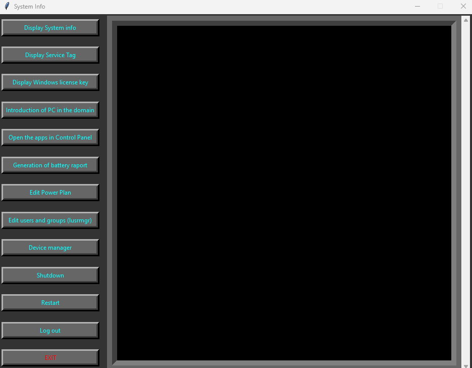
18. Real time System Information
Displays real-time information about your system.

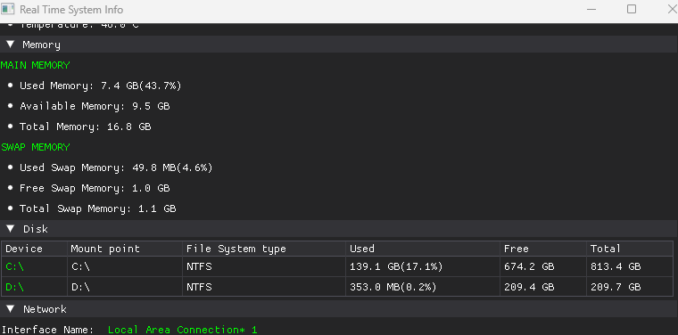


19. Network Console
Displays various information about your network: data packets sent or received, saved Wi-Fi passwords, who is connected to the LAN, and other network details.

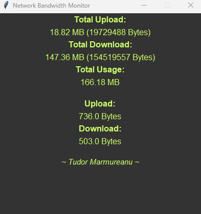
20. AI Chatbot
It is your virtual assistant for the application. It explains the necessary information for full operation, including network mappings.

21. Read me first
Provides a concise range of information to use the application correctly and to avoid potential errors.
22. Copying files
If only file copying is needed, there is a special account: user/nopass.
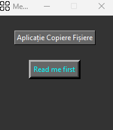
23. Terminal Emulator
Simulates a normal CMD and even a Linux interface. Access is restricted according to security policies.
To use Nmap, you must have written permission from the networking department managers or the IT director/manager, and we will grant access.
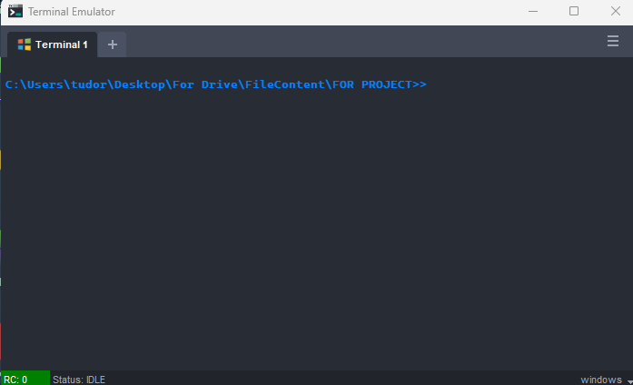
24. Generating Passwords
There are 2 accounts for generating passwords: passgen/passgen and passgenV2/passgenV2.
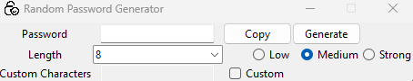
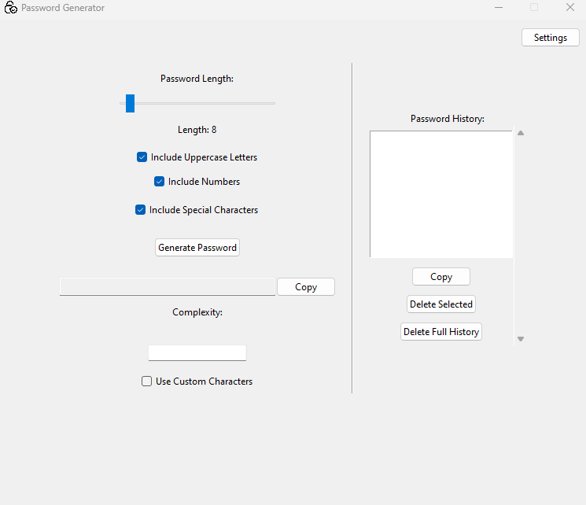
25. Network Bandwidth Monitoring
This account generates a real-time graph of your network's behavior.
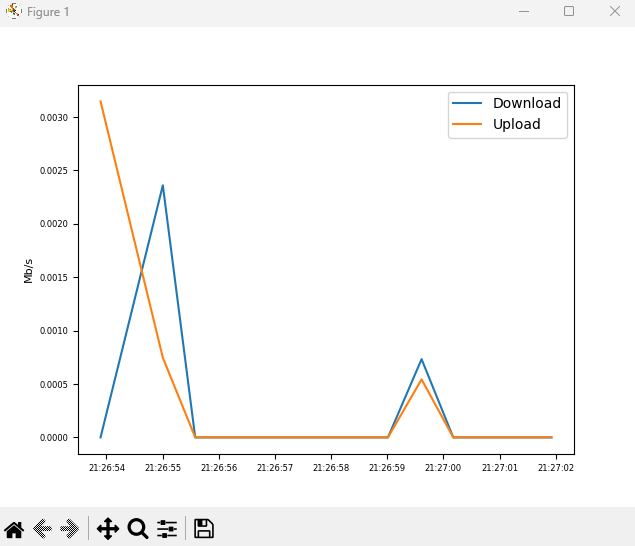
26. File Encryption
This application encrypts data using high-complexity algorithms.
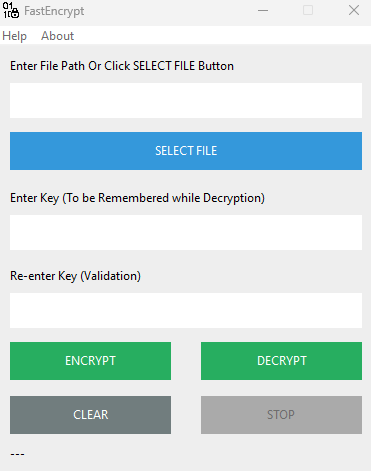
27. Testing
This application allows for creating tests with up to 4 answer options for each question.

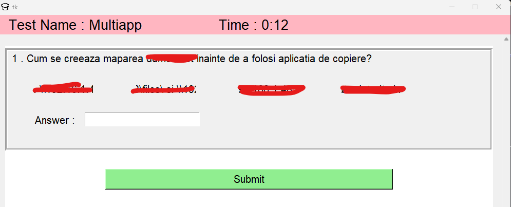
28. Cracking ZIP Passwords
The account allows access to password-protected ZIP archives. The implemented algorithms crack the respective passwords.
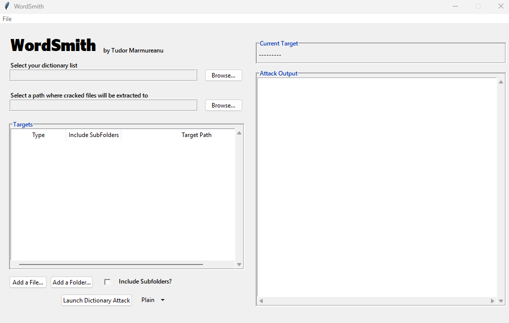
29. Knowledge Base
This is a local platform where various references or procedures can be saved. They are organized into different categories (Networking, Hardware, Linux, Printers, Apps, Programming, Others) for easier retrieval.

30. Password Manager
It is a utility that helps save passwords in an encrypted database.
First, a password must be created to access the database.

You can manage the saved passwords, either by deleting or changing them.

You can also generate a password randomly (using a strong algorithm) or by using only the characters entered in the first field.
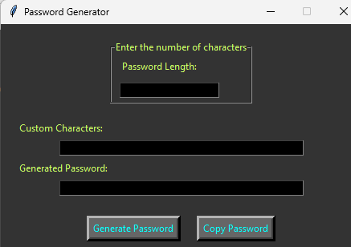
31. Pause Manager
This window helps you manage breaks within the IT team, especially if requests/tickets need to be allocated and you need to know who has returned from their break or not. You can create lists of people in the IT team using the JSON Generation menu. This file with a .json extension will be saved in the path specified in the 'ChooseLocationForPause.txt' file. We chose this method because if the file needs to be accessed on a server (so that all team members can view real-time break updates), for example, it is useful for the path to be variable (\192.....\files\ -> example of a path leading to a server).
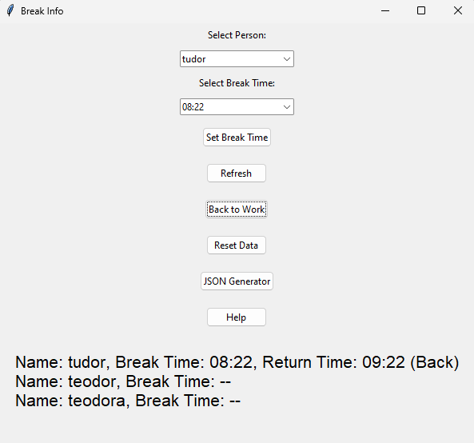
32. Task Manager
This console is a simple task manager: it can terminate any running programs, display the percentage of memory usage, and show the percentage of data packets being transmitted/received over the network. There is also a diagram available.

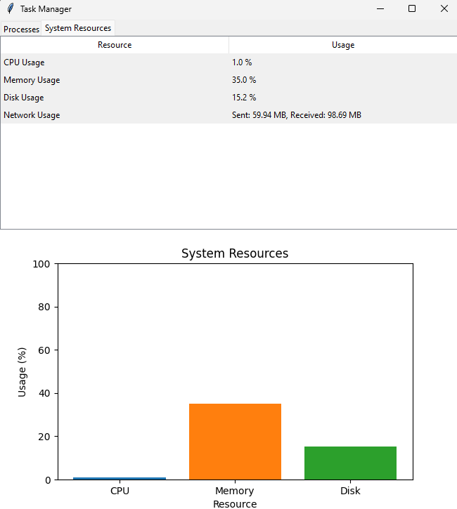
33. File Organizer
It is a utility that helps you organize your folders into categories.
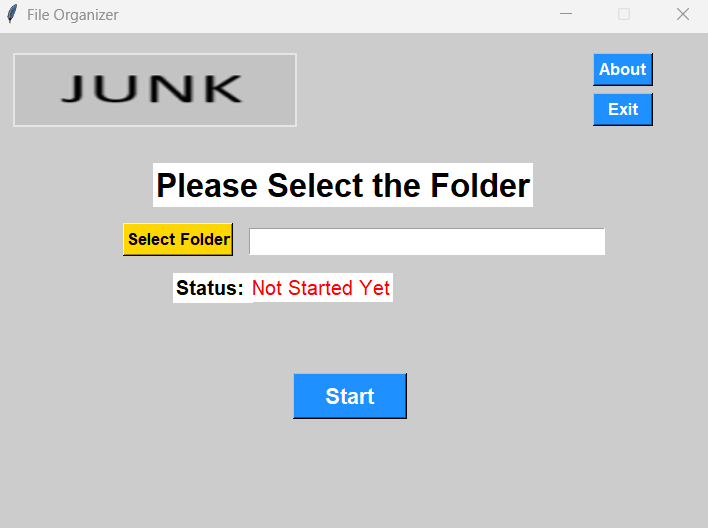
34. Whiteboard Presentation
This program is designed for those who create sketches or explanations using drawings or other images. You can import an image into this whiteboard, draw on it, and move it with the mouse by holding down the left click.
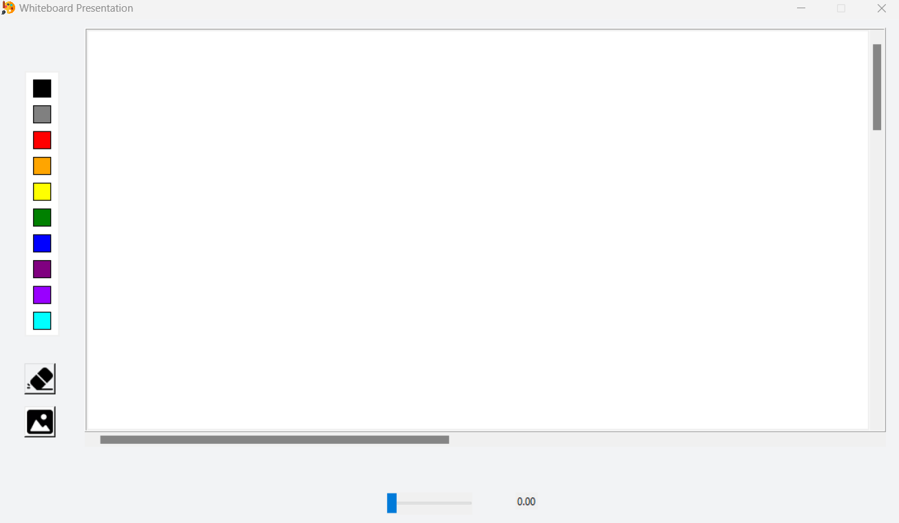
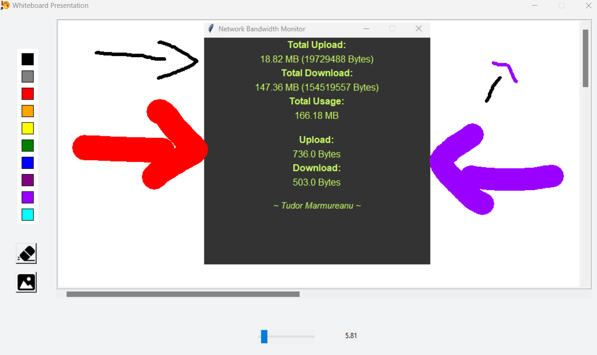
35. Contact Manager
This section is for recording the contact details of certain individuals. If you do not wish to complete a field, you can press the SPACE. To edit an entry, double-click on the entry, and a new menu will open allowing you to edit the selected entry.
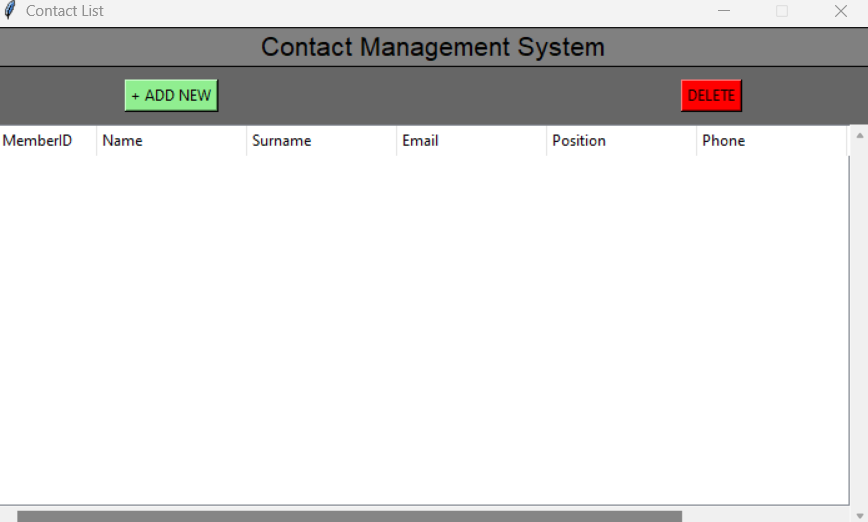
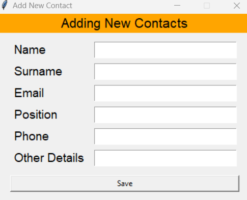
36. Listener - Check Online/Offline Devices
This application is developed to quickly check which devices are online and which are offline. These devices are clustered in a .json file and are grouped into specific categories (each grouping is determined by the user). Of course, that .json file can be created and also edited directly from the application. The refresh rate is 10 seconds.
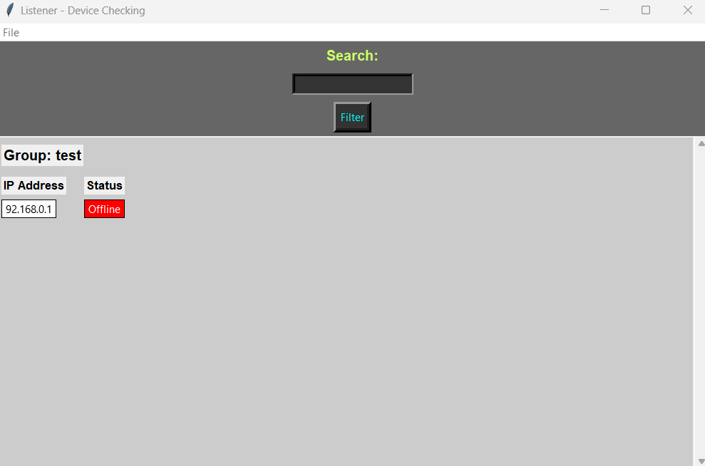